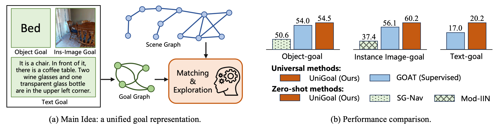
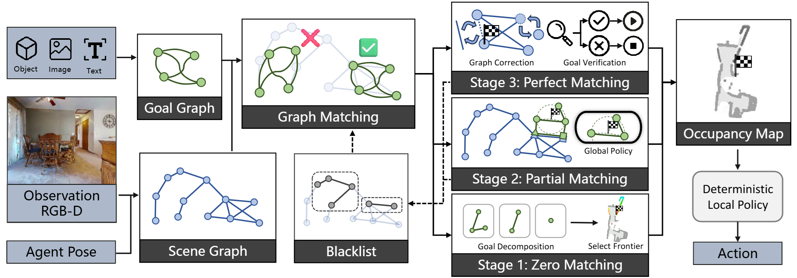
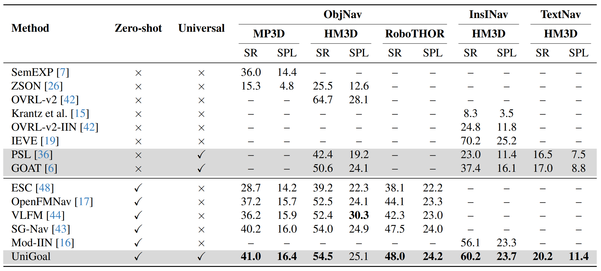
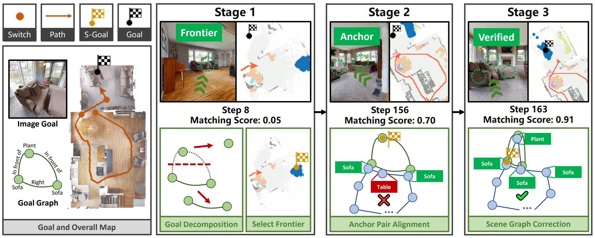

In this paper, we propose a general framework for universal zero-shot goal-oriented navigation. Existing zero-shot methods build inference framework upon large language models (LLM) for specific tasks, which differs a lot in overall pipeline and fails to generalize across different types of goal. Towards the aim of universal zero-shot navigation, we propose a uniform graph representation to unify different goals, including object category, instance image and text description. We also convert the observation of agent into an online maintained scene graph. With this consistent scene and goal representation, we preserve most structural information compared with pure text and are able to leverage LLM for explicit graph-based reasoning. Specifically, we conduct graph matching between the scene graph and goal graph at each time instant and propose different strategies to generate long-term goal of exploration according to different matching states. The agent first iteratively searches subgraph of goal when zero-matched. With partial matching, the agent then utilizes coordinate projection and anchor pair alignment to infer the goal location. Finally scene graph correction and goal verification are applied for perfect matching. We also present a blacklist mechanism to enable robust switch between stages. Extensive experiments on several benchmarks show that our UniGoal achieves state-of-the-art zero-shot performance on three studied navigation tasks with a single model, even outperforming task-specific zero-shot methods and supervised universal methods.

Approach
Overall framework of our approach. We construct a hierarchical 3D scene graph as well as an occupancy map online. At each step, we divide the scene graph into several subgraphs, each of which is prompted to LLM with a hierarchical chain-of-thought for structural understanding of the scene context. We interpolate the probability score of each subgraph to the frontiers and select the frontier with highest score for exploration. This decision is also explainable by summarizing the reasoning process of the LLM. With the scene graph representation, we further design a re-perception mechanism, which helps the agent give up false positive goal object by continuous credibility judgement.

Experiments
We evaluate our method on MP3D, HM3D and RoboTHOR.

Object-goal navigation results on MP3D, HM3D and RoboTHOR. We compare the Success Rate (SR) and success rate weighted by
path length (SPL) of state-of-the-art methods in different settings.

Left: Per category Success Rate on MP3D. Right: Time cost of connecting n edges for online 3D scene graph construction.
Bibtex
@article{yin2024sgnav,
title={SG-Nav: Online 3D Scene Graph Prompting for LLM-based Zero-shot Object Navigation},
author={Hang Yin and Xiuwei Xu and Zhenyu Wu and Jie Zhou and Jiwen Lu},
journal={arXiv preprint arXiv:2410.08189},
year={2024}
}
 Paper (arXiv)
Paper (arXiv)
 Code (GitHub)
Code (GitHub)
 中文解读 (Zhihu)
中文解读 (Zhihu)